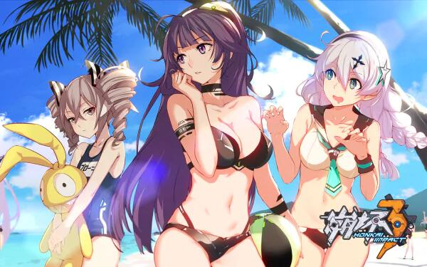
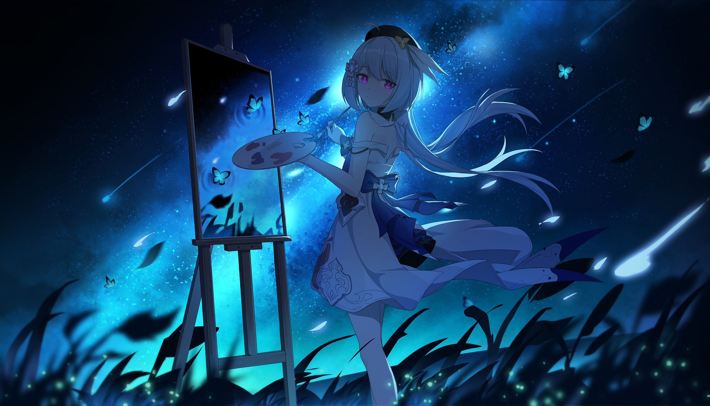

制作相关
游戏的故事延续了《崩坏学园2》的主线剧情，讲述了在不远的未来，神秘的灾害“崩坏”侵蚀了世界，被崩坏感染的人类，变成了没有思维，只懂破坏的“死士”，它们和从崩坏中诞生的巨大怪物“崩坏兽”，一同对这个世界造成了巨大的威胁。唯一可以抵抗崩坏的，只有一些拥有“崩坏抗体”的少女，只有由她们组成的“女武神”部队。勇敢的少女们穿上冰冷的机甲，拿起沉重的武器，与崩坏战斗着。为世界上所有的美好而战，在被崩坏侵蚀的世界中，由勇敢的少女组成的女武神部队，为守护世界而展开了战斗。玩家可扮演炽翎、白夜执事、第六夜想曲、月下初拥、极地战刃、空之律者、原罪猎人等女武神，去保护这个世界 。
 - 为世界上所有美好而战
- 我将坠入黑暗，换你回到光明
- “希尔！”，超大声
- “这个世界一点都不美好”，掏出千律核心————来自一位抽卡沉了的舰长
- “一个人，要走多远的距离，才能在时光的尽头，追回最初的自己”————奥托·阿波卡利斯